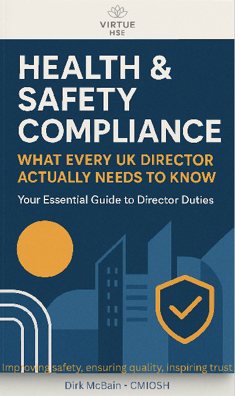

Health & Safety Policy
A practical policy template designed to help organisations establish a clear health and safety commitment and define key responsibilities.
Download TemplateKNOWLEDGE CENTRE
Explore practical templates, expert guidance and trusted resources designed to help organisations strengthen management systems, improve compliance and operate with confidence.
Download practical templates and checklists developed by Virtue HSE to support continual improvement within your organisation.
A practical policy template designed to help organisations establish a clear health and safety commitment and define key responsibilities.
Download TemplateIdentify workplace hazards, assess risks, and document control measures, this template will help you meet your legal obligations and improve workplace safety.
Download GuideA practical checklist to support internal audits and help organisations identify opportunities for continual improvement.
Download ChecklistWe regularly recommend the following Health and Safety Executive guidance to help organisations understand legal requirements and apply recognised good practice.
Practical guidance on carrying out suitable and sufficient workplace risk assessments.
Visit HSE →Guidance explaining when workplace incidents must be reported under RIDDOR.
Visit HSE →Official guidance for controlling substances hazardous to health within the workplace.
Visit HSE →Advice and practical guidance to help reduce injuries caused by manual handling activities.
Visit HSE →Gain practical insight into health and safety compliance with our complimentary guide, written to help UK directors understand their legal responsibilities and improve organisational performance.
This practical guide has been written to help directors, business owners and senior managers understand their legal responsibilities and build a safer, more compliant organisation.

If you're looking for tailored advice beyond our guides and resources, we'd be pleased to discuss how Virtue HSE can support your organisation.